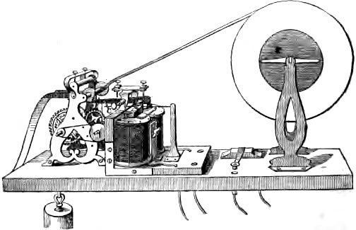
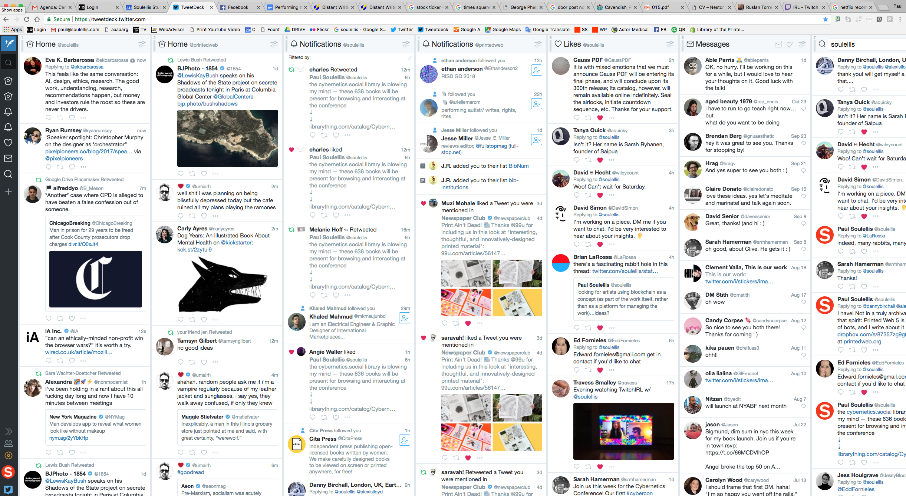
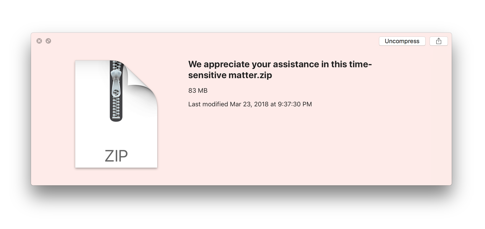

Printing telegraph (1850s)

The smooth flow of network culture has been normalized.
Downloading interrupts this condition! It slows the experience of network culture and is one small way to resist dominant narratives. To disperse material, by making it downloadable, is to preserve it—you keep it safe by making copies that disconnect from the network. To download is to counter-publish.

Once downloaded, files are outside the conventions and economies and flows of publishing and art. The material slows down. On your hard drive, you’re free to do whatever you like with your files.
Urgencyprintlab.pdf was created on August 5, 2018 and published at X:XXpm during a
workshop conducted by
Paul Soulellis at Artbook @ MoMA PS1 Bookstore in Long Island City, NY, USA. This file may be downloaded, shuffled, remixed, printed, re-circulated—even destroyed.
Participants: